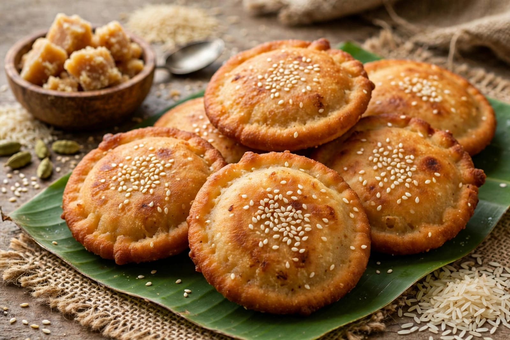
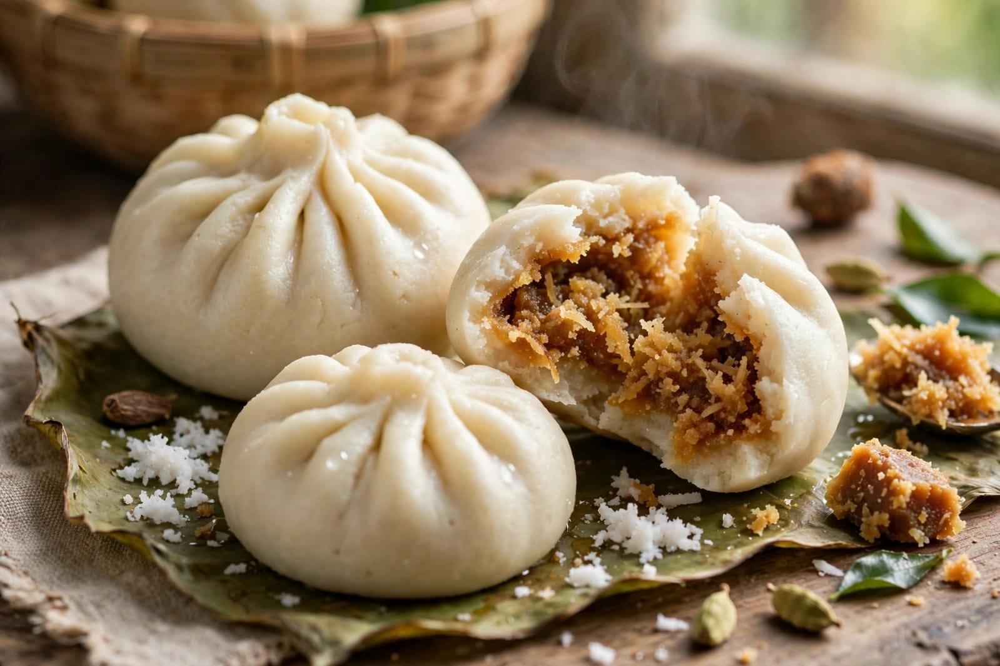
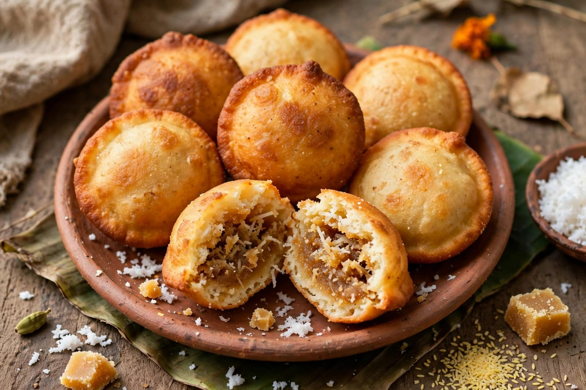

About Nuakhai
Nuakhai is an important harvest festival celebrated mainly in Odisha. It is especially popular in the western parts of Odisha. Nuakhai is a festival of new harvest and thanksgiving. The word Nuakhai is connected with eating new food. Farmers offer the newly harvested crops to their deities. The festival has great cultural and social importance. Nuakhai is celebrated with great joy and enthusiasm. Families prepare traditional food for the occasion. People wear new clothes during the festival. Relatives and friends gather together. People exchange greetings and good wishes. The festival is closely connected with agriculture. Farmers thank nature and the deities for a good harvest. New rice is an important part of the celebration. The newly harvested rice is prepared as a special offering. People first offer the new crop to their local deity. After the traditional offering, family members eat the new food. This tradition gives the festival its special meaning. Nuakhai also promotes family unity. People who live away from their villages often return home. Families gather together to celebrate the festival. Elders bless younger members of the family. People visit relatives and neighbours. Traditional foods are prepared in homes. Cultural programs are organized in many places. Traditional music and dance are performed. Sambalpuri cultural traditions are often seen during celebrations. Nuakhai is an important festival of western Odisha. It reflects the agricultural traditions of the region. The festival shows respect for farmers and nature. It also strengthens relationships among family members. Nuakhai creates a feeling of unity and happiness. People celebrate the festival with cultural pride. It is an important part of Odia culture. Nuakhai is a joyful celebration of new crops and new beginnings.
Nuakhai is celebrated according to the traditional Odia calendar. The date is generally fixed according to specific traditional calculations. The festival is usually celebrated after the arrival of the new harvest. The main ceremony is connected with the offering of the new rice. Families prepare the new rice as a traditional food offering. The offering is made to the presiding deity of the region. In many areas, people worship their local deities. The Samaleswari Temple in Sambalpur has special importance during Nuakhai. People participate in religious and cultural activities. After the offering, families eat the new food together. This tradition is called Nuakhai Bhetghat in the wider social celebration. People meet each other and exchange greetings. Elders give blessings to younger members. Families prepare several traditional dishes. Arisa Pitha is one of the traditional foods associated with Odisha. Manda Pitha and Kakara Pitha are also popular Odia foods. Rice-based dishes are important in the festival. People enjoy food together with family members. Traditional clothes are worn during celebrations. Women may wear traditional Sambalpuri sarees. Men may wear traditional clothing such as dhoti and kurta. Cultural performances are organized in many communities. Sambalpuri dance and music are important parts of the cultural celebration. Folk songs are performed during community programs. People decorate their homes before the festival. The festival creates a festive atmosphere in villages and towns. Nuakhai is especially important for farming communities. It celebrates the relationship between people, land and agriculture. The festival expresses gratitude for the new crop. It also represents prosperity and hope for the future. Nuakhai brings people closer together. It strengthens social and family relationships. The festival is celebrated with respect for tradition. It is one of the important cultural festivals of Odisha.
Nuakhai has a strong connection with the agricultural life of Odisha. Farmers work throughout the year to grow crops. The new harvest is considered important and valuable. Nuakhai provides an opportunity to thank nature for the harvest. People offer the first produce to their deities. The tradition reflects respect for agriculture. Families celebrate together after the religious rituals. Food plays an important role in Nuakhai celebrations. New rice is used to prepare traditional dishes. Different communities prepare different local foods. Pitha is commonly prepared during Odia festivals. Arisa Pitha is a popular traditional sweet. Kakara Pitha is another traditional Odia dish. Manda Pitha is also enjoyed by many families. Rice dishes and sweets are shared with relatives. People visit neighbours and friends. They exchange greetings and blessings. Community gatherings are common during Nuakhai. Cultural programs may include traditional music and dance. Sambalpuri songs are performed in many areas. Traditional dress adds to the beauty of the celebration. Nuakhai also helps younger generations learn local traditions. It preserves the cultural heritage of western Odisha. The festival connects modern life with traditional agricultural practices. It encourages people to respect farmers and nature. Nuakhai is a festival of gratitude, family and community. It brings happiness to homes and villages. People celebrate the new harvest with hope and joy. The festival represents prosperity and togetherness. Nuakhai is an important regional festival of India. It is a beautiful expression of Odisha's rich cultural heritage.
Special Foods

Arisa Pitha
Arisa Pitha is a traditional Odia sweet prepared during festivals.

Manda Pitha
Manda Pitha is a traditional steamed rice-flour dish from Odisha.

Kakara Pitha
Kakara Pitha is a traditional Odia sweet often prepared for festivals.